Amr ZAKI SALIH
Élève ingénieur en Génie Mathématiques en cinquième année GM5 — INSA Rouen Normandie
Passionné par la convergence entre statistiques mathématiques, machine learning et recherche opérationnelle. De la conception d'architectures d'IA multimodales (OCR manuscrit LaTeX & tuteur intelligent) à la prévision stochastique de stocks (Université Koç), aux modèles de pathfinding heuristique A* et à l'analyse de données radar EGMS, je développe des solutions prédictives et computationnelles robustes.
Les 5 Projets Phares
Projets majeurs associant intelligence artificielle, interfaces utilisateur intelligentes (IUI), machine learning avec pathfinding A*, traitement de données radar EGMS, séries temporelles avec recherche opérationnelle et clustering de données médicales.
ITIM — Système de Tutorat Intelligent de Mathématiques
Plateforme d'apprentissage intelligente combinant un canvas d'écriture manuscrite infini, une transcription VLM en LaTeX temps réel (< 200 ms), un moteur de calcul symbolique formel (SymPy) et un agent tuteur adaptatif inspiré de l'architecture cognitive ACT-R.
- Reconnaissance OCR & VLM Multimodale : Numérisation instantanée d'expressions mathématiques manuscrites complexes converties en syntaxe formelle LaTeX.
- Calcul Symbolique & Validation Pas-à-Pas : Évaluation formelle étape par étape via SymPy pour vérifier la rigueur du raisonnement sans révéler la solution.
- Diagnostic Cognitif & Buggy Rules : Détection active des règles erronées récurrentes chez l'élève et génération d'indices adaptés à la charge cognitive.
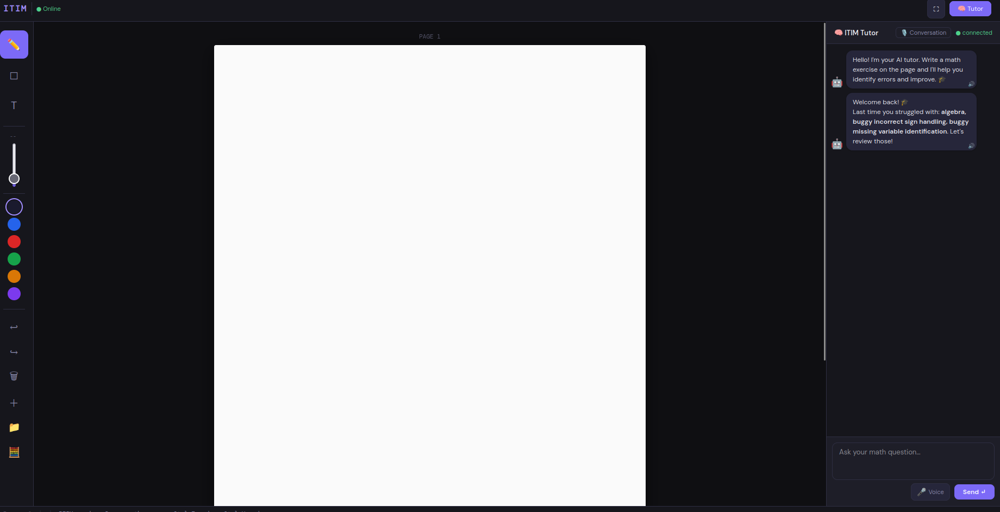
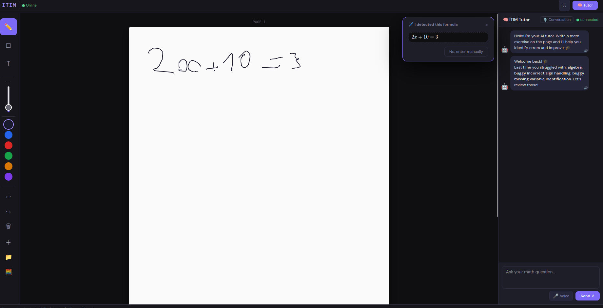
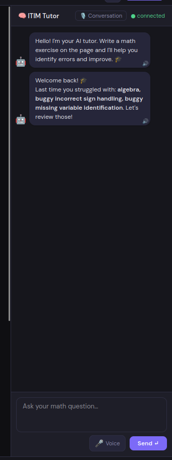
Simulation Satellite & Trajectoire Autonome
Conception et développement en Java d'un environnement de simulation dynamique spatiale et de planification autonome de trajectoires par algorithme heuristique A* sous contraintes d'évitement d'obstacles et d'optimisation énergétique.
- Optimisation de Chemin par A* : Fonction de coût multi-objectifs pondérée $f(n) = \alpha \cdot d(n) + \beta \cdot c(n) + \gamma \cdot p(n)$ conciliant distance, dépense énergétique et pénalité de risque.
- Modélisation de l'Espace 2D : Discrétisation de l'espace, détection géométrique des risques de collision avec corps célestes et débris orbitaux en temps réel.
- Génie Logiciel Robuste : Architecture logicielle modulaire découplant le moteur physique, le système de communication réseau et l'interface de visualisation.
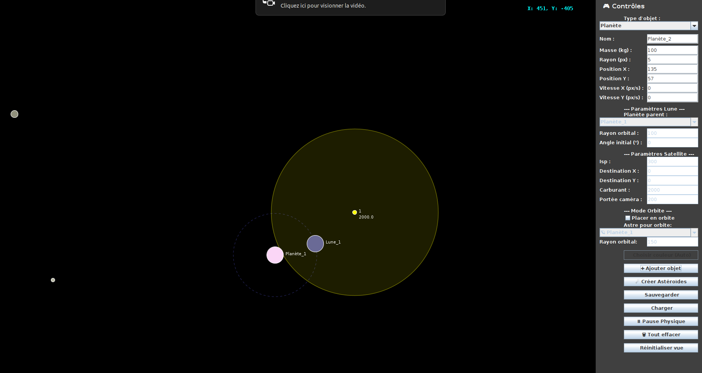
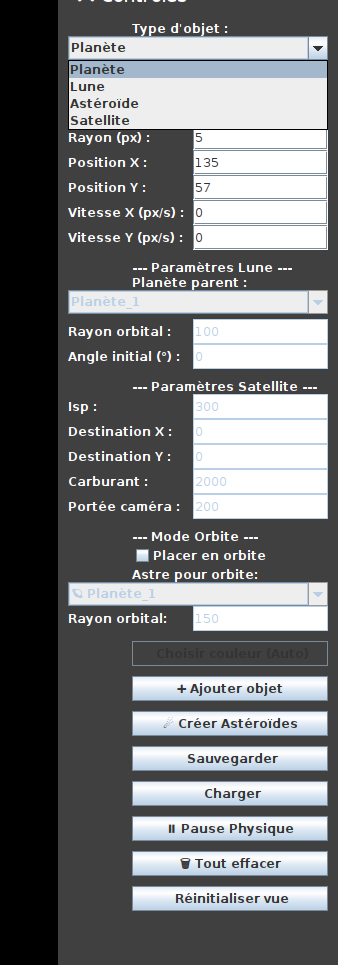
Étude du lien entre assèchement du sol et hauteur du sol en Europe
Étude statistique spatio-temporelle en R du couplage physique entre le retrait-gonflement des argiles mesuré à l'échelle millimétrique par le service européen EGMS (European Ground Motion Service) et le déficit de stock d'eau souterraine issu de la mission satellitaire GRACE (TWS).
- Exploitation de Données Massives EGMS : Filtrage géométrique et traitement statistique de millions de points de déplacement vertical du sol acquis par les satellites Sentinel-1.
- Estimation du Déphasage Temporel : Calcul de fonctions d'inter-corrélation temporelle démontrant un retard caractéristique de 1 à 2 mois entre le pic de déficit hydrique et l'affaissement mécanique du sol.
- Harmonisation Temporelle & Spatiale : Rééchantillonnage temporel mensuel et projection spatiale pour aligner les résolutions spatiales hétérogènes d'EGMS et de GRACE.


Forecasting des Ventes & Optimisation de Stocks (Newsvendor)
Pipeline quantitatif articulé en deux étapes : prévision statistique de séries temporelles (Régression OLS saisonnière, lags autorégressifs, Random Forest) puis décision prescriptive stochastique via le modèle du Newsvendor pour minimiser les coûts espérés sous incertitude de la demande.
- Volumétrie & Benchmark Prédictif : Analyse de 108 mois d'historique de ventes automobiles US avec split temporel strict (test set 1967-1968). L'OLS saisonnière atteint un RMSE de 1 954 unités et le Random Forest un MAPE de 9.99%.
- Importance des Variables Autorégressives : Identification formelle du terme saisonnier $y_{t-12}$ comme prédicteur dominant (coefficient 0.68 en OLS, feature importance majeure en Random Forest).
- Prise de Décision Opérationnelle Optimale : Détermination du stock mensuel optimal sous ratio critique de coût et analyse de sensibilité continue entre risque de rupture et coût de stockage.
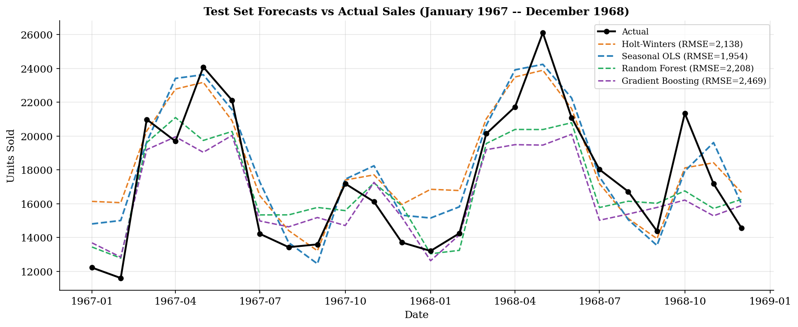
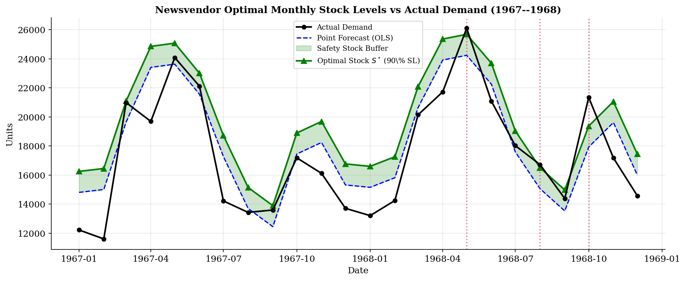
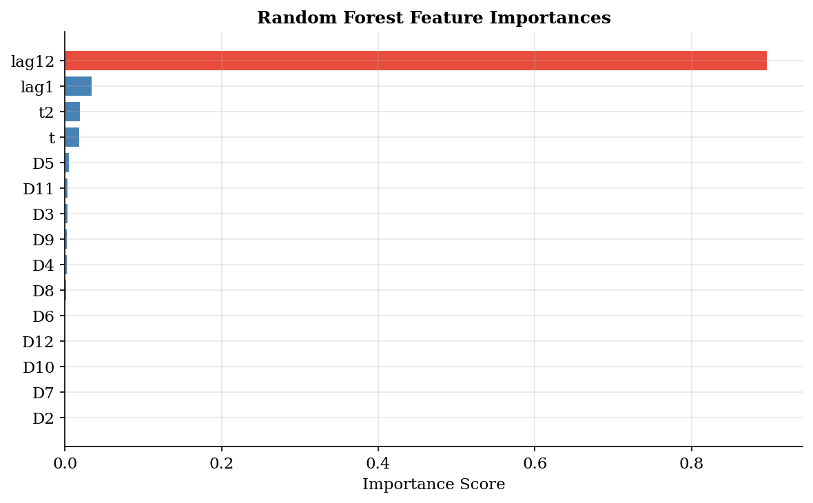
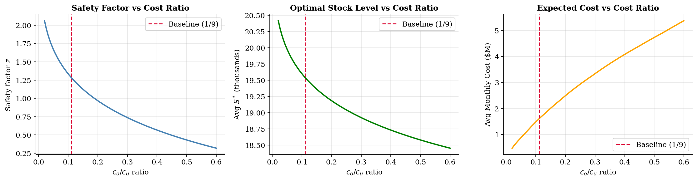
Classification Non Supervisée & Clustering de Données de Santé
Analyse exploratoire et segmentation d'une cohorte clinique en R : Analyse en Composantes Principales (ACP) normée et non-normée pour la réduction de dimension, suivie d'une Classification Ascendante Hiérarchique (CAH / critère de Ward) pour identifier des profils métaboliques distincts.
- Décomposition Spectrale Rigoureuse : Diagonalisation de la matrice de corrélation, analyse de l'éboulis des valeurs propres et projection sur les axes factoriels principaux capturant la majorité de l'inertie totale.
- Segmentation Clinique par CAH : Agrégation selon le critère de variance minimale de Ward et découpage objectif du dendrogramme basé sur le saut d'inertie inter-classes.
- Interprétation Multivariée des Corrélations : Projection des variables cliniques (indices métaboliques, mensurations) dans le cercle des corrélations pour caractériser chaque sous-groupe de patients sans a priori.
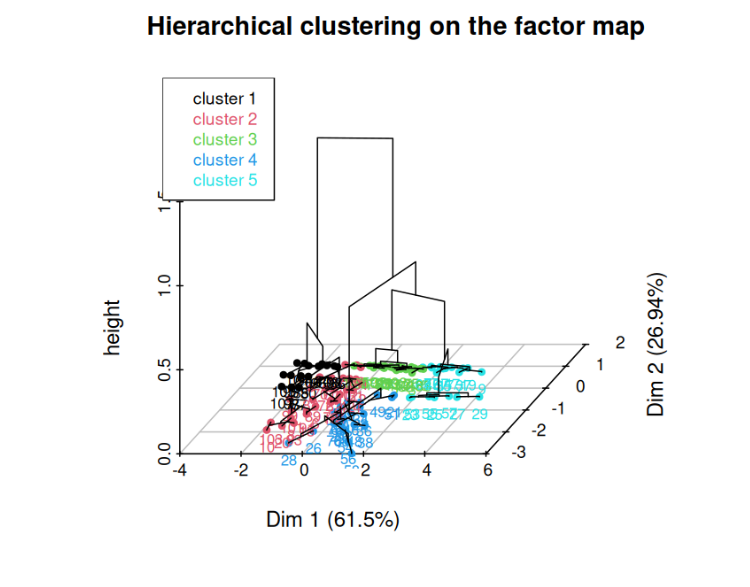
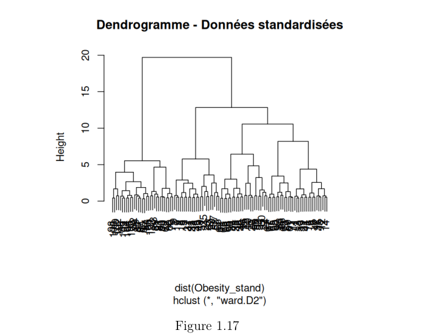
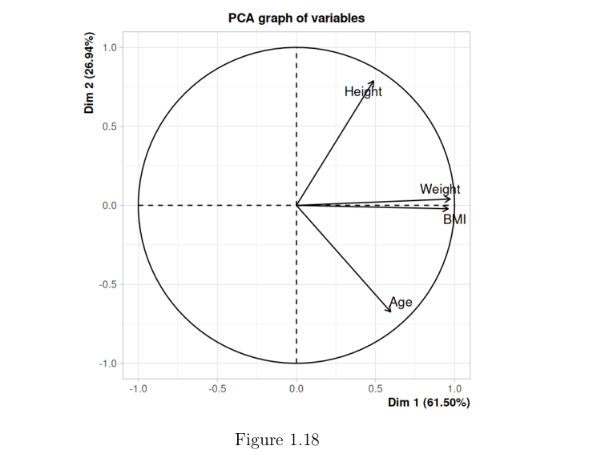
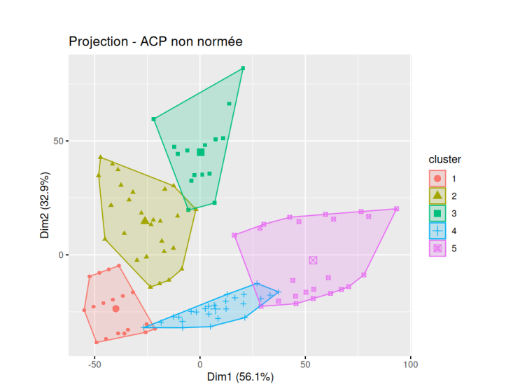
Catalogue de Projets
Calcul haute performance (HPC), optimisation continue, intégrateurs symplectiques et algorithmique système.
Résolveur Gauss-Seidel Optimisé
Implémentation en Fortran 90 et Python pour la résolution de systèmes linéaires creux issus de la discrétisation de l'équation de Poisson.
Intégrateurs Verlet vs Runge-Kutta
Étude comparative de la conservation de l'énergie et de la symplecticité sur les systèmes hamiltoniens dynamiques à temps long.
Analyse Statique & Modale de Treillis
Modélisation matricielle de la rigidité globale par éléments finis barres, calcul des contraintes et déformées d'un pont sous sollicitations.
Factorisations LU & Cholesky
Développement des algorithmes de factorisation directe sans pivotage et avec pivot partiel, étude de stabilité numérique et erreurs d'arrondi.
Dictionnaire Indexé & Arbres en C
Moteur de recherche lexicographique optimisé en langage C via tables de hachage et arbres préfixes (Trie) avec gestion manuelle de la mémoire.
Jeu des Chiffres Croisés (Java Swing)
Application de jeu mathématique interactif selon le patron de conception MVC, gestion d'événements asynchrones et validation d'équations.
Compétences & Technologies
Un profil d'ingénieur en Génie Mathématiques combinant machine learning, optimisation mathématique, modélisation statistique avancée et développement logiciel.
Machine Learning & IA Appliquée
- • Vision-Language Models (VLM) & OCR
- • Support Vector Machines (SVM RBF / Linéaires)
- • Algorithmes Heuristiques & Pathfinding (A*)
- • Random Forest & Arbres de Décision
- • Régression Logistique from scratch (NumPy)
- • Clustering (CAH critère de Ward, K-Means)
Séries Temporelles & R.O.
- • Prévision Temporelle (ARIMA, SARIMA)
- • OLS Saisonnière & Lags Autorégressifs
- • Modèle Stochastique de Stocks (Newsvendor)
- • Optimisation Convexe & Conditions KKT
- • Algorithme d'Uzawa & Dualité Lagrangienne
- • Scipy Optimize & Programmation Linéaire
Statistique & Modélisation
- • Régression Non Linéaire (Gauss-Newton)
- • Rééchantillonnage Bootstrap & Bandes de Confiance
- • Réduction de Dimension (ACP Normée / Non Normée)
- • Estimation de Densité par Noyau (KDE)
- • Analyse de Séries Spatio-temporelles (EGMS)
- • Détection de Latence & Corrélation Croisée
Calcul Scientifique & Software
- • Python (NumPy, SciPy, Pandas, SymPy)
- • Langage R (FactoMineR, analyse spatiale)
- • Java (POO Avancée, Pattern MVC, Swing)
- • C Pur (Pointeurs, Arbres Trie, Hachage)
- • Fortran 90 (Calcul Creux & HPC Gauss-Seidel)
- • FastAPI, React 19, Git / CI-CD, Linux (Ubuntu)
INSA Rouen Normandie & Université Koç
Diplôme d'Ingénieur — Département Génie Mathématique (GM)
GM5 — Cinquième Année de Spécialisation en Génie Mathématiques
En coursMachine Learning avancé, régression non-linéaire (Gauss-Newton, Bootstrap), méta-apprentissage, classification médicale par SVM, recherche d'un stage de fin d'études de 6 mois dès le 4 mai 2027.
Université Koç (Istanbul) — Échange Académique International
Spring 2026Semestre d'études d'excellence en anglais : Data Science for Operational Decision Making (INDR 422 - Forecasting & Newsvendor), Intelligent User Interfaces (COMP 437 - Projet ITIM), Machine Learning (multiclass classification from scratch), Financial Engineering (INDR 473 - Modélisation stochastique).
GM4 — Modélisation Stochastique, Optimisation Convexe & Systèmes Dynamiques
Optimisation continue (conditions KKT, algorithme d'Uzawa), processus stochastiques, séries temporelles et données radar EGMS/GRACE (projet MSRO), algorithmes heuristiques A* et programmation orientée objet en Java.
GM3 — Mathématiques Appliquées & Analyse Numérique Matricielle
Statistique multivariée exploratoire (ACP normée/non-normée, CAH de Ward), résolution de systèmes linéaires creux (Gauss-Seidel, Cholesky), calcul de valeurs propres (puissance itérée), structures de données et gestion mémoire en C.
STPI — Classes Préparatoires Intégrées INSA Rouen (2022-2024)
Formation scientifique fondamentale : analyse mathématique, algèbre linéaire, probabilités, physique générale, algorithmique et programmation impérative.
Certifications & Formations Continues
Validation de compétences fondamentales en intelligence artificielle et technologies génératives.
AI Fundamentals: Foundations for Understanding AI
IBM SkillsBuild • Octobre 2026
Fondamentaux théoriques et architecturaux de l'intelligence artificielle : principes d'apprentissage automatique, réseaux de neurones, traitement du langage naturel (NLP), vision par ordinateur et enjeux éthiques de l'IA.
Career Essentials in Generative AI
Microsoft & LinkedIn Learning • Octobre 2026
Parcours certifiant sur les modèles d'IA générative : grands modèles de langage (LLM), intégration en environnement d'entreprise avec Microsoft Copilot, prompt engineering et principes directeurs d'IA responsable.
Opportunité de Stage de Fin d'Études
Actuellement élève ingénieur en cinquième année GM5 je suis à la recherche d'un stage de fin d'études de 6 mois à partir du 4 mai 2027 en Data Science, Machine Learning, IA ou Recherche Opérationnelle. Mobilité totale en France et à l'international.